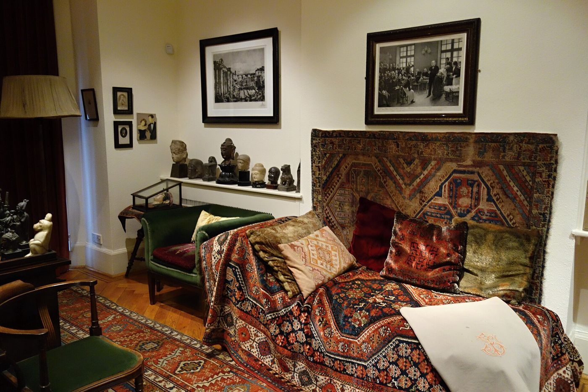

Die Traumdeutung aber ist die Via regia zur Kenntnis des Unbewußten im Seelenleben.
Sigmund Freud, Die Traumdeutung (1900)
Wo Es war, soll Ich werden.
Sigmund Freud, Neue Folge der Vorlesungen (1933)
I
Psikanalizin doğuşu, alışılmadık bir biçimde, bir hastanın kendi deneyimine verdiği adla anılır. 1880 ile 1882 yılları arasında Viyanalı hekim Josef Breuer’in tedavi ettiği ve vaka kayıtlarına “Anna O.” olarak geçen genç kadın, babasının ölümcül hastalığı sırasında ağır belirtiler geliştirmişti: kollarında ve bacaklarında felçler, görme bozuklukları, bir süre yalnızca İngilizce konuşabilmesine yol açan dil kayıpları, gün içinde birbirini izleyen iki ayrı bilinç hâli. Breuer, akşamüstleri hastasının yaşadıklarını ayrıntısıyla anlatmasına izin verdiğinde belirtilerin hafiflediğini fark etti. Genç kadın bu yönteme İngilizce iki ad verdi: ciddi bir tonla talking cure, yani konuşma tedavisi; şakayla karışık bir tonla da chimney sweeping, yani baca temizliği.1
Vakanın en çok anılan sahnesi, Anna O.’nun haftalarca su içemediği bir dönemin sonunda yaşanır. Susuzluktan kıvranmasına rağmen bardağı dudaklarına götüremeyen genç kadın, bir akşam, sevmediği İngiliz arkadaşının köpeğinin bir bardaktan su içtiğini gördüğü bir sahneyi, o anda bastırdığı tiksintiyi bütün yoğunluğuyla ifade ederek anlatır; ardından bir bardak su ister ve içer. Belirti, söze dökülmemiş bir duygunun bedene yazılmış biçimiydi; söze döküldüğünde ortadan kalkmıştı. Yıllar sonra Anna O.’nun gerçek adının Bertha Pappenheim olduğu anlaşılacaktı. Pappenheim, iyileştikten sonra Almanya’nın öncü sosyal hizmet uzmanlarından ve kadın hakları savunucularından biri oldu; 1904’te Yahudi Kadınlar Birliği’ni kurdu ve ölümünden sonra adına bir posta pulu basıldı. Psikanalizin ilk hastası, kendi hayatını da yeniden yazmayı bilmişti.


II
Freud, Breuer’in deneyiminden yola çıkarak önce hipnozla, sonra hastanın alnına elini bastırıp hatıraların gelmesini istediği bir “baskı tekniği”yle çalıştı. Asıl dönüşüm ise, psikanaliz tarihinin en güzel tesadüflerinden biriyle, yine bir hastanın itirazıyla geldi. 1889’da tedavi ettiği ve vaka kayıtlarına “Frau Emmy von N.” olarak geçen kadın, bir görüşme sırasında Freud’a, belirgin bir hoşnutsuzlukla, şunun ya da bunun nereden geldiğini sorup durmamasını, söyleyeceklerini anlatmasına izin vermesini söyler. Freud’un İngilizce çevirmeni ve editörü James Strachey, bu cümleyi sonradan serbest çağrışım adını alacak yöntemin ilk belirişi olarak kaydeder.2 Psikanalizin temel yöntemi, bir analistin icadı olmaktan önce, sözünün kesilmesine itiraz eden bir hastanın talebidir.
Freud bu yöntemi 1913’te, analitik tedavinin başlangıcına dair yazdığı teknik makalede, sonradan çok alıntılanacak bir imgeyle anlatır: Analizan, bir tren kompartımanında pencerenin yanında oturan ve dışarıda değişen manzarayı içerideki birine betimleyen bir yolcu gibi davranmalıdır; aklına ne geliyorsa, önemsiz, utanç verici, mantıksız ya da konuyla ilgisiz görünse bile söylemelidir.3 Bu, psikanalizin neredeyse tek kuralıdır ve ilk bakışta kolay görünür. Oysa pratikte en zor şeylerden biridir; çünkü hepimiz konuşurken kendimizi düzenler, sansürler, makul ve tutarlı bir anlatı kurmaya çalışırız. Serbest çağrışım, bu düzenlemenin gevşediği yerde bir başka sesin, bilinçdışının konuşmaya başlamasına imkân tanır.
III
Psikanalizin temel kavramı olan bilinçdışı, zihnin karanlık ve ilkel bir bodrumu değildir; daha çok, öznenin kendisi hakkında bildiği ama bilmek istemediği bir bilgidir. Freud bu bilginin kendini nerelerde gösterdiğini iki büyük kitapta titizlikle inceledi. 1900’de yayımlanan Rüyaların Yorumu’nda rüyayı bilinçdışına giden kraliyet yolu olarak tanımladı; bir yıl sonra yayımlanan Gündelik Yaşamın Psikopatolojisi’nde ise unutmaları, yanlış okumaları, kazara yapılan hareketleri ve dil sürçmelerini inceledi. Bu kitaptaki örneklerden biri, bilinçdışının ne kadar kısa yoldan konuşabildiğini gösterir: Avusturya Meclisi’nin başkanı, oturumu açarken, üyelerin hazır bulunduğunu tespit ettiğini söyler ve oturumu “kapalı” ilan eder. Freud’un yorumuna göre başkan, zorlu geçeceğini bildiği oturumun bir an önce bitmesini istemektedir; ve bu istek, onun iradesine rağmen, bir kelimenin yerine karşıtını geçirerek kendini söyletmiştir.4
Lacan, 1950’lerden itibaren Freud’un bu keşfini dilbilimin araçlarıyla yeniden okudu ve bilinçdışının bir dil gibi yapılandığını öne sürdü. Bu formül, bilinçdışının sözcükler, çağrışımlar, ses benzerlikleri ve anlam kaymaları üzerinden işlediği anlamına gelir. Bir kelimenin yerine bir başkasının gelmesi, bir cümlenin yarıda kalması, aynı ifadenin farklı bağlamlarda tekrar tekrar belirmesi, bilinçdışının konuşmadaki izleridir. Analistin dinlediği şey, bu yüzden, yalnızca anlatılan hikâyenin içeriği değil, anlatının dokusudur: neyin söylendiği kadar nasıl söylendiği, nerede takılındığı, hangi kelimenin hangi kelimeyi çağırdığı.
IV
Psikanalizin kuruluş anlatısında bir rüyanın özel bir yeri vardır. 24 Temmuz 1895 gecesi, Viyana yakınlarındaki Bellevue köşkünde tatil yapan Freud, sonradan “Irma’nın iğnesi” adıyla anılacak bir rüya görür. Rüyada, tedavisini sürdürdüğü genç bir hastası, Irma, bir kabul töreninde karşısına çıkar; ağrılarından yakınır, Freud onun boğazına bakar, bir meslektaşı da hastalığın bir arkadaşlarının dikkatsizce yaptığı bir iğneden kaynaklandığını ilan eder. Freud bu rüyayı Rüyaların Yorumu’nda ayrıntılı bir çözümlemenin “örnek rüyası” olarak kullanır ve rüyanın, onu Irma’nın sürmekte olan acısının sorumluluğundan aklama isteğini gerçekleştirdiği sonucuna varır.5 Beş yıl sonra dostu Wilhelm Fliess’e yazdığı bir mektupta, bir gün o köşkün duvarında, rüyaların sırrının 24 Temmuz 1895’te Dr. Sigmund Freud’a burada açıldığını bildiren mermer bir levha bulunup bulunmayacağını yarı şaka sorar.6 Bugün o yerde, köşk yıkılmış olsa da, böyle bir levha durmaktadır.
Freud’un rüya kuramının asıl katkısı, rüyanın bir anlamı olduğunu söylemesinden çok, bu anlamın nasıl gizlendiğini göstermesidir. Rüyanın görünen içeriği ile gizli düşünceleri arasında bir “rüya çalışması” işler: Yoğunlaştırma, birden çok düşünceyi tek bir imgede birleştirir; yer değiştirme, duygusal vurguyu önemli olandan önemsiz görünen bir ayrıntıya kaydırır; ve rüya, düşüncelerini sözcükler yerine görüntülerle ifade etmek zorunda kalır. Freud bu yüzden rüyayı bir resim olarak değil, her bir öğesi bir hece ya da kelimenin yerini tutan bir resimli bilmece, bir rebüs olarak okumayı önerir.7 Lacan’ın, bilinçdışının bir dil gibi yapılandığı tezini en çok bu bölüme dayandırması tesadüf değildir: Yoğunlaştırma ile yer değiştirme, dilbilimcilerin metafor ve metonimi dediği iki temel işlemle örtüşür.
V
Tıbbi bakış açısında semptom, ortadan kaldırılması gereken bir arızadır. Psikanaliz semptoma farklı bir statü verir: Semptom, öznenin söyleyemediği bir çatışmanın taşıyıcısıdır; bastırılmış bir isteği hem saklayan hem de açığa vuran bir oluşumdur. Anna O.’nun su içememesi bunun ilk örneğiydi ve Freud’un sonraki bütün vakaları aynı mantığı farklı biçimlerde sergiledi. Kaygı nöbetleri, takıntılı düşünceler, tekrar eden ilişki örüntüleri ya da açıklanamayan bedensel yakınmalar, kişinin hayatında henüz söze dökülmemiş bir şeye işaret eder. Bu yüzden psikanalitik çalışmada amaç semptomu yalnızca susturmak değil, onun ne söylediğini duymaktır. Semptomun anlamı konuşmada açıldıkça, kişi çoğu zaman onunla farklı bir ilişki kurabildiğini fark eder; bazen semptom çözülür, bazen de daha az ezici, daha yaşanabilir bir biçim alır.
VI
Psikanalitik sürecin bir başka temel kavramı, aktarımdır. Breuer, Anna O.’nun tedavisini aniden sonlandırmıştı. Freud’un biyografi yazarı Ernest Jones’un yıllar sonra aktardığı ve bugün tarihçiler tarafından tartışılan anlatıya göre bu kopuşun nedeni, hastanın hekimine yönelik yoğun duyguları ve Breuer’in bu duygular karşısında yaşadığı paniktir.8 Freud, aynı olgudan kaçmak yerine onu bir çalışma malzemesine dönüştürmeyi seçti. Hastanın analiste yönelttiği duyguların, hayatındaki önemli figürlere yönelik eski duyguların bir tekrarı olduğunu gördü ve buna aktarım adını verdi. Aktarım bir engel değil, tedavinin motorudur: Kişinin hayatında tekrar eden şey, analitik ilişkide de belirir ve böylece, ilk kez, konuşulabilir hâle gelir.
VII
Divan, psikanalizin en tanınmış simgesidir ve tarihi de en az kendisi kadar ilginçtir. Freud’un divanı, 1890 dolaylarında minnettar bir hastanın, Madame Benvenisti’nin hediyesidir; üzerini örten İran halısını Freud kendisi eklemiştir. Freud, divanı neden kullandığını 1913’teki teknik makalesinde son derece insani bir gerekçeyle açıklar: Günde sekiz saat, hatta daha uzun süre başkalarının bakışları altında olmaya katlanamamaktadır.9 Ama divanın asıl işlevi analizana yöneliktir: Yüz yüze bir konuşmada karşıdakinin yüzünü okumaya, onun tepkilerine göre kendini ayarlamaya alışkınızdır. Divanda bu bakış ortadan kalkar ve söz, onaylanma ya da yargılanma beklentisinden bir ölçüde kurtulur. Bugün pek çok psikanalitik çalışma yüz yüze ya da çevrimiçi yürütülür; divan bir zorunluluk değil, bir imkândır.
Freud, 1933’teki Yeni Giriş Dersleri’nde psikanalizin amacını, sonradan sayısız kez yorumlanacak bir cümleyle özetler: Wo Es war, soll Ich werden; O’nun olduğu yerde Ben olmalıyım. Amerikan ego psikolojisi bu cümleyi benin bilinçdışı dürtüleri denetim altına alması olarak okudu. Lacan ise cümleyi tersinden okur: Söz konusu olan, benin alanını genişletmek değil, öznenin, bilinçdışının konuştuğu o yerde kendini tanıması ve orada kendi arzusunu üstlenmesidir. Freud’un 1926’da kaleme aldığı Hekim Olmayanların Analizi Sorunu da bu bağlamda anılmaya değer; Freud bu metinde psikanalizin tıbbın bir alt dalı olmadığını, iyi yetişmiş, kendi analizinden geçmiş hekim olmayan analistlerin de bu işi yapabileceğini savunur.10
VIII
Psikanaliz doğduğu günden bu yana tartışmalı bir disiplin olmuştur ve bu tartışmaları görmezden gelen bir tanıtım eksik kalır. Bilim felsefecisi Karl Popper, psikanalizin, her türlü gözlemi açıklayabildiği için hiçbir gözlemle yanlışlanamayacağını, bu yüzden bilimsel bir kuram sayılamayacağını öne sürmüştü.11 Felsefeci Adolf Grünbaum ise 1984’te yayımladığı kapsamlı eleştiride, psikanalizin klinik verilerinin analistin telkininden arındırılamayacağını, dolayısıyla kuramın klinik kanıtlarla doğrulanamayacağını savundu.12
Bu eleştiriler psikanalizi hem kendi yöntemini daha titiz biçimde düşünmeye hem de etkililiğini dış ölçütlerle sınamaya zorladı; yukarıda andığım araştırmalar, bu sınamaların bir sonucudur. Ama Lacanyen gelenek, eleştirilere bir başka düzlemde de yanıt verir: Psikanaliz, doğa bilimlerinin modelinde bir bilgi üretmeyi değil, tekil bir öznenin kendi sözüyle kurduğu ilişkiyi dönüştürmeyi amaçlar. Analizanın konuşmasında ortaya çıkan hakikat, istatistiksel bir genellemenin değil, o konuşmanın kendisinin hakikatidir. Bu iki bakış açısının birbirini dışlaması gerekmez; iyi bir psikanalitik çalışma, hem kendi etkilerini dürüstçe sorgulayabilmeli hem de her öznenin tekilliğine sadık kalabilmelidir.
IX
Psikanaliz, belirli hedefler, ödevler ve yapılandırılmış tekniklerle çalışan pek çok terapi yaklaşımından farklı olarak, önceden belirlenmiş bir programı izlemez. Hedef, kişinin bir ortalamaya uydurulması değil, kendi arzusuyla, tekrarlarıyla ve tarihiyle kurduğu ilişkinin dönüşmesidir. Bu, psikanalizin semptomlarla ilgilenmediği anlamına gelmez. Psikolog Jonathan Shedler’in 2010’da American Psychologist’te yayımladığı derleme ve Falk Leichsenring ile Sven Rabung’un 2008’de JAMA’da yayımladığı meta-analiz, psikanalitik ve psikodinamik terapilerin semptomlarda anlamlı bir rahatlama sağladığını ve bu kazanımların tedavi bittikten sonra da sürme, hatta artma eğiliminde olduğunu göstermiştir.13
Psikanalitik çalışmaya başvuranlar arasında kaygı ve panik, çökkünlük ve anlamsızlık duygusu, ilişkilerde tekrar eden örüntüler, yas ve ayrılıklarla baş etmede güçlük, takıntılı düşünceler ve kararsızlık sık karşılaşılan deneyimlerdir; ama başvurmak için belirli bir yakınma tanımına sahip olmak gerekmez. Kendini daha derinden anlama isteği de başlı başına bir başlangıçtır. Bununla birlikte, kendinize ya da başkasına zarar verme düşünceleriniz varsa ya da akut bir kriz içindeyseniz, ilk adım 112 Acil Çağrı Merkezi’ne ya da en yakın sağlık kuruluşuna başvurmaktır. Psikanalitik çalışma, gerektiğinde psikiyatrik değerlendirme ve ilaç tedavisiyle birlikte de yürütülebilir.
İlk görüşmeler karşılıklı bir tanışma ve değerlendirme sürecidir; kişiyi başvurmaya neyin yönelttiği, beklentileri ve çalışmanın nasıl bir çerçevede ilerleyebileceği konuşulur, ardından görüşmelerin sıklığı ve düzeni birlikte belirlenir. Görüşmelerde konuşan ağırlıklı olarak analizandır. Analist zaman zaman bir soru sorar, bir kelimenin altını çizer ya da bir bağlantıya dikkat çeker; bu müdahaleler hazır yorumlar sunmaktan çok, analizanın kendi söylediğini yeniden duymasına imkân tanımayı amaçlar. Anna O.’nun keşfettiği şey belki de hâlâ psikanalizin en iyi tanımıdır: söylenmemiş olanın söylenebileceği bir yer ve onu söyleyen kişiyi, söyledikçe değiştiren bir konuşma.
Notlar
- J. Breuer ve S. Freud, Histeri Üzerine Çalışmalar (1895), “Anna O.” vakası, SE II. Freud’un metinleri için Türkçe adlar verilmiş, cilt numaraları Standard Edition’a (SE) göre belirtilmiştir. ↩︎
- Breuer ve Freud, Histeri Üzerine Çalışmalar, “Frau Emmy von N.” vakası ve Strachey’nin bu pasaja düştüğü not, SE II. ↩︎
- S. Freud, “Tedavinin Başlangıcı Üzerine” (1913), SE XII. ↩︎
- S. Freud, Gündelik Yaşamın Psikopatolojisi (1901), V. bölüm, SE VI. ↩︎
- S. Freud, Rüyaların Yorumu (1900), II. bölüm, SE IV. ↩︎
- Freud’un Fliess’e 12 Haziran 1900 tarihli mektubu. J. M. Masson (Ed.), The Complete Letters of Sigmund Freud to Wilhelm Fliess, 1887–1904 (1985). ↩︎
- Freud, Rüyaların Yorumu, VI. bölüm, SE IV–V. ↩︎
- E. Jones, The Life and Work of Sigmund Freud, I. cilt (1953). Jones’un anlatısının tarihsel doğruluğu, sonraki araştırmalarda ciddi biçimde sorgulanmıştır. ↩︎
- Freud, “Tedavinin Başlangıcı Üzerine” (1913). ↩︎
- S. Freud, Hekim Olmayanların Analizi Sorunu (1926), SE XX. ↩︎
- K. Popper, Conjectures and Refutations (1963). ↩︎
- A. Grünbaum, The Foundations of Psychoanalysis: A Philosophical Critique (1984). ↩︎
- J. Shedler, “The efficacy of psychodynamic psychotherapy”, American Psychologist 65/2 (2010), s. 98–109; F. Leichsenring ve S. Rabung, “Effectiveness of long-term psychodynamic psychotherapy: A meta-analysis”, JAMA 300/13 (2008), s. 1551–1565. ↩︎
Kaynakça
- Breuer, J. ve Freud, S. (1895). Histeri Üzerine Çalışmalar. SE II.
- Freud, S. (1900). Rüyaların Yorumu. SE IV–V.
- Freud, S. (1901). Gündelik Yaşamın Psikopatolojisi. SE VI.
- Freud, S. (1913). Tedavinin Başlangıcı Üzerine. SE XII.
- Freud, S. (1926). Hekim Olmayanların Analizi Sorunu. SE XX.
- Freud, S. (1933). Psikanalize Yeni Giriş Dersleri. SE XXII.
- Grünbaum, A. (1984). The Foundations of Psychoanalysis: A Philosophical Critique. Berkeley: University of California Press.
- Jones, E. (1953). The Life and Work of Sigmund Freud, Cilt I. New York: Basic Books.
- Lacan, J. (1966). Écrits. Paris: Seuil.
- Leichsenring, F. ve Rabung, S. (2008). Effectiveness of long-term psychodynamic psychotherapy: A meta-analysis. JAMA, 300(13), 1551–1565.
- Masson, J. M. (Ed.) (1985). The Complete Letters of Sigmund Freud to Wilhelm Fliess, 1887–1904. Cambridge, MA: Harvard University Press.
- Popper, K. (1963). Conjectures and Refutations. London: Routledge.
- Shedler, J. (2010). The efficacy of psychodynamic psychotherapy. American Psychologist, 65(2), 98–109.